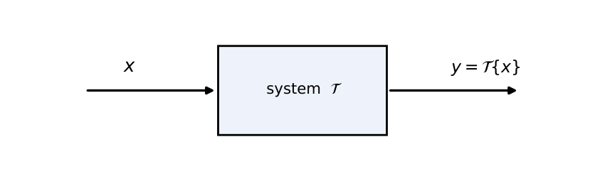
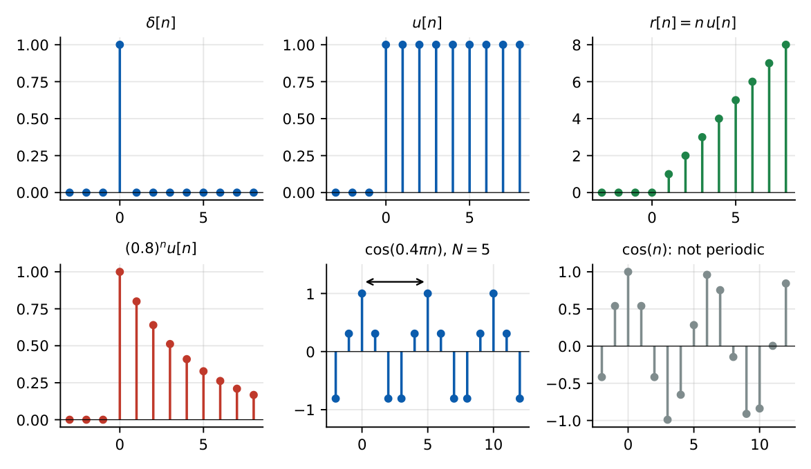
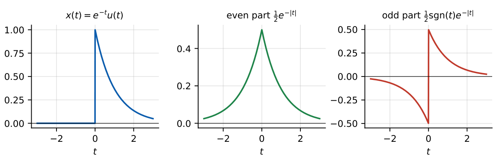
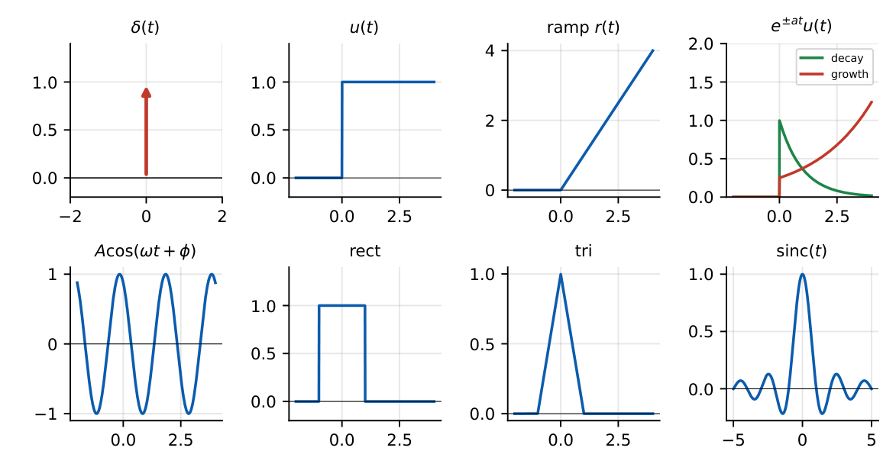
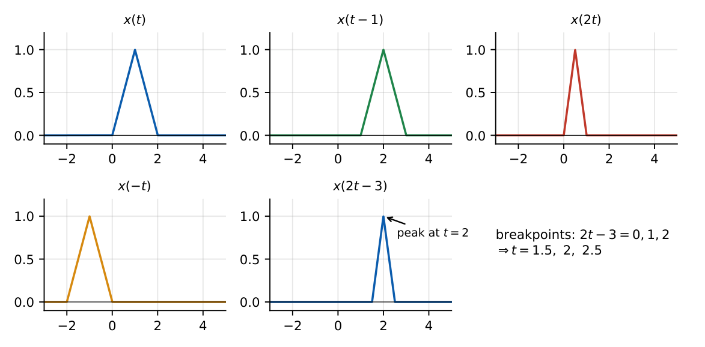

Introduction to Signals
In this chapter
Periodicity (CT and DT), energy vs power signals, even/odd parts, impulse properties, and time transformations \(x(at+b)\). These are quick 1-mark questions if you know the rules, and traps if you rush.
15.1 Definition of signals and systems
A signal is a function that carries information, usually a function of time: voltage \(v(t)\), a sampled sequence \(x[n]\). A system is a process that transforms an input signal into an output signal: \(y=\mathcal T\{x\}\).

15.2 Continuous-time signals
\(x(t)\) is defined for every real \(t\). Examples: \(\sin(2\pi ft)\), \(e^{-t}u(t)\), a speech waveform.
15.3 Discrete-time signals
\(x[n]\) is defined only for integer \(n\): a sequence. It may come from sampling, \(x[n]=x(nT_s)\), or arise naturally (daily temperature). The independent variable \(n\) is dimensionless.

15.4 Deterministic and random signals
A deterministic signal is described exactly by a formula or table; a random signal (noise) is described by its statistics (mean, variance, power spectral density). Chapters 15–27 treat deterministic signals.
15.5 Periodic and aperiodic signals
CT: \(x(t+T)=x(t)\) for all \(t\); the smallest \(T>0\) is the fundamental period, \(\omega_0=2\pi/T\).
DT: \(x[n+N]=x[n]\) for all \(n\), with \(N\) a positive integer. For \(x[n]=\cos(\Omega_0n)\): periodic iff \(\dfrac{\Omega_0}{2\pi}=\dfrac mN\) is rational; \(N=\dfrac{2\pi m}{\Omega_0}\) with \(m\) the smallest integer making \(N\) an integer.
- Sum of periodic signals with periods \(T_1,T_2\): periodic iff \(T_1/T_2\) is rational; \(T=\mathrm{LCM}(T_1,T_2)\) (equivalently \(\omega_0=\gcd\) of the frequencies).
- Product \(x_1x_2\): same rule for periodicity (fundamental period may be smaller than the LCM, e.g. \(\sin t\cos t\)).
- \(x(at)\) has period \(T/|a|\). A CT complex exponential \(e^{j\omega_0t}\) is always periodic; DT \(e^{j\Omega_0n}\) only if \(\Omega_0/2\pi\) is rational.
- DT frequencies \(\Omega\) and \(\Omega+2\pi\) are identical; CT frequencies are all distinct.
\(\cos2t+\sin3t\): \(T_1=\pi\), \(T_2=2\pi/3\), ratio \(3/2\); \(T=2\pi\). \(\cos t+\cos\pi t\): ratio \(\pi\) irrational, not periodic.
\(\cos(0.4\pi n)\): \(0.4\pi/2\pi=1/5\), \(N=5\). \(\cos(3\pi n/7)\): \(3/14\), \(N=14\). \(\cos n\): \(1/2\pi\) irrational, not periodic.
15.6 Even and odd signals
Even: \(x(-t)=x(t)\) (symmetric about the vertical axis). Odd: \(x(-t)=-x(t)\) (so \(x(0)=0\)). Every signal splits uniquely into \[x_e(t)=\frac{x(t)+x(-t)}2,\qquad x_o(t)=\frac{x(t)-x(-t)}2,\qquad x=x_e+x_o.\] Products: even\(\times\)even \(=\) even; odd\(\times\)odd \(=\) even; even\(\times\)odd \(=\) odd. Integrals: \(\int_{-a}^ax_o=0\), \(\int_{-a}^ax_e=2\int_0^ax_e\).

\(x(t)=1+t+t^2\): \(x_e=1+t^2\), \(x_o=t\).
15.7 Energy and power signals
Energy \(E=\displaystyle\int_{-\infty}^{\infty}|x(t)|^2dt\) (\(\displaystyle\sum_{n}|x[n]|^2\) in DT). Power \(P=\displaystyle\lim_{T\to\infty}\frac1{2T}\int_{-T}^{T}|x(t)|^2dt\) (\(\lim\frac1{2N+1}\sum_{-N}^{N}|x[n]|^2\)).
Energy signal: \(0<E<\infty\) (so \(P=0\)). Power signal: \(0<P<\infty\) (so \(E=\infty\)). Some signals are neither (e.g. \(r(t)\), \(e^{t}\)).
Periodic signal: \(P=\dfrac1T\displaystyle\int_T|x|^2dt\).
| Signal | Class |
|---|---|
| \(e^{-at}u(t)\), \(a>0\); rect, tri, \(\delta[n]\); \((0.5)^nu[n]\) | energy |
| \(u(t)\) (\(P=\frac12\)), \(A\cos\omega t\) (\(P=\frac{A^2}2\)), \(Ae^{j\omega t}\) (\(P=A^2\)), \(u[n]\) (\(P=\frac12\)), constants | power |
| \(r(t)\), \(e^{at}u(t)\), \(a>0\); \(t\,u(t)\) | neither |
\(x(t)=e^{-2t}u(t)\): \(E=\int_0^\infty e^{-4t}dt=\tfrac14\). \(x[n]=(0.5)^nu[n]\): \(E=\dfrac1{1-0.25}=\dfrac43\). Rect of height \(2\) and width \(3\): \(E=4\times3=12\). \(3\cos5t+4\sin7t\): different frequencies, so \(P=\tfrac{9}2+\tfrac{16}2=12.5\).
The power of a sum equals the sum of the powers only when the cross-term averages to zero (different frequencies, or the same frequency \(90^\circ\) apart). \(\cos t+\cos t=2\cos t\) has power \(2\), not \(\tfrac12+\tfrac12=1\); whereas \(\cos t+\sin t\) has power \(1=\tfrac12+\tfrac12\).
15.8 Elementary signals

- Unit impulse \(\delta(t)\): zero except at \(0\), \(\int\delta=1\). Properties: sifting \(\int x(t)\delta(t-t_0)dt=x(t_0)\); \(x(t)\delta(t-t_0)=x(t_0)\delta(t-t_0)\); scaling \(\delta(at)=\dfrac1{|a|}\delta(t)\); \(\delta(-t)=\delta(t)\); \(\delta(t)=\dfrac{du}{dt}\). DT: \(\delta[n]=u[n]-u[n-1]\), \(\sum x[n]\delta[n-n_0]=x[n_0]\).
- Unit step \(u(t)=1\) (\(t>0\)), \(0\) (\(t<0\)); \(u(t)=\int_{-\infty}^t\delta\).
- Ramp \(r(t)=t\,u(t)=\int u\).
- Exponential \(e^{st}\), \(s=\sigma+j\omega\) complex: \(e^{\sigma t}e^{j\omega t}\); decays if \(\sigma<0\).
- Sinusoid \(A\cos(\omega t+\phi)\). Rect \(\rect(t/\tau)\); tri; \(\sinc(t)=\sin\pi t/\pi t\).
\(\int e^{-t}\delta(t-2)dt=e^{-2}\). \(\delta(2t)=\tfrac12\delta(t)\). \(\int(t+1)\delta(2t-4)dt=\tfrac12(2+1)=1.5\). \(\int_{-\infty}^{\infty}(t^2+1)\delta(2t-4)dt=\tfrac12(4+1)=2.5\).
15.9 Signal operations
- Time shifting \(x(t-t_0)\): delay by \(t_0\) (shift right for \(t_0>0\)).
- Time scaling \(x(at)\): compress by \(|a|\) for \(|a|>1\), expand for \(|a|<1\).
- Time reversal \(x(-t)\): mirror about \(t=0\).
- Amplitude scaling \(Ax(t)\).
To plot \(x(at+b)\): first shift by \(b\) (obtaining \(x(t+b)\)), then scale by \(a\) (replace \(t\to at\)). Equivalent: locate key points by solving \(at+b=\) (original breakpoint). Example: \(x(2t-3)\) with \(x\) a triangle on \([0,2]\) peaking at \(1\): solve \(2t-3=0,1,2\), so \(t=1.5,\,2,\,2.5\): the triangle is on \([1.5,2.5]\), peak at \(t=2\).

\(x(2t-3)=x\big(2(t-1.5)\big)\) is the compressed signal \(x(2t)\) delayed by \(1.5\), not by \(3\). Likewise \(x(-t+3)=x\big(-(t-3)\big)\): reverse first, then delay by \(3\).
Q1. The fundamental period of \(\cos2t+\sin3t\) is (A) \(\pi\) (B) \(2\pi\) (C) \(6\pi\) (D) not periodic.
Q2. The fundamental period of \(\cos(0.4\pi n)\) is (A) \(2\) (B) \(5\) (C) \(10\) (D) not periodic.
Q3. The energy of \(e^{-2t}u(t)\) is (A) \(1/2\) (B) \(1/4\) (C) \(1\) (D) \(\infty\).
Answers: Q1 (B). Q2 (B). Q3 (B).
Q4. \(\displaystyle\int_{-\infty}^\infty(t^2+1)\,\delta(2t-4)\,dt=\) (A) \(5\) (B) \(2.5\) (C) \(10\) (D) \(0\).
Q5. \(x(t)\) is a triangle on \([0,2]\) with peak at \(t=1\). The peak of \(x(2t-3)\) occurs at (A) \(t=2\) (B) \(t=1\) (C) \(t=4\) (D) \(t=-1\).
Answers: Q4 (B). Q5 (A).
Q6. The average power of \(3\cos5t+4\sin7t\) is .
Q7. The energy of \(x[n]=(0.5)^nu[n]\) is (two decimals).
Answers: Q6: \(12.5\). Q7: \(1.33\).
Q8. Which are energy signals? (A) \(e^{-t}u(t)\) (B) \(u(t)\) (C) \(\delta[n]\) (D) \(\cos t\) (E) \(r(t)\).
Answers: Q8: (A) and (C).
(i) DT periodicity needs \(\Omega_0/2\pi\) rational (not \(\Omega_0\)). (ii) Energy vs power classification of \(u(t)\) and periodic signals. (iii) \(\delta(at)=\frac1{|a|}\delta(t)\) (absolute value!). (iv) Order of shift and scale in \(x(at+b)\). (v) \(x(0)=0\) for an odd signal only if defined at \(0\).
T1. Period of \(\cos(\pi n/3)+\sin(\pi n/4)\)? T2. Even part of \(e^{-t}u(t)\) at \(t=1\)?
Answers: T1: \(N_1=6\), \(N_2=8\), \(N=24\). T2: \(\tfrac12e^{-1}=0.184\).
- CT sum period \(=\) LCM of periods; DT: \(N=2\pi m/\Omega_0\), rational needed.
- \(x_e=\frac{x(t)+x(-t)}2\), \(x_o=\frac{x(t)-x(-t)}2\).
- \(E=\int|x|^2\); \(P=\lim\frac1{2T}\int|x|^2\); energy signals have \(P=0\), power signals \(E=\infty\).
- \(\delta(at)=\frac1{|a|}\delta(t)\); sifting; \(u=\int\delta\), \(r=\int u\).
- \(x(at+b)\): breakpoints from \(at+b=t_k\).